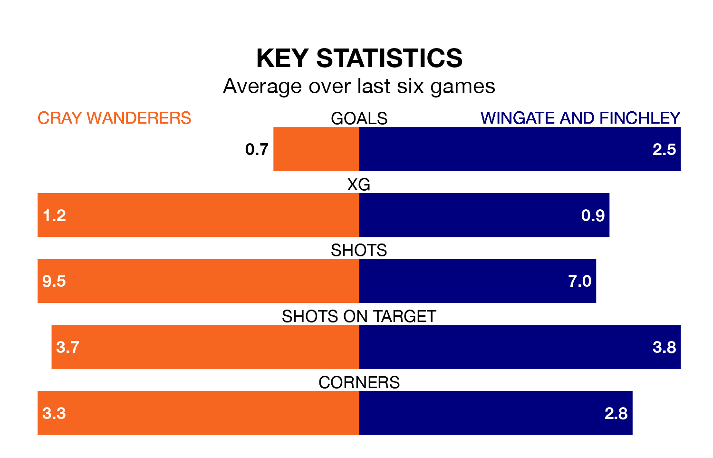

Cray Wanderers host Wingate and Finchley on Saturday in Isthmian Premier Division.
In their last league match, on January 13, Cray lost to Billericay Town 6-0 away.
Wingate & Finchley won, 5-1 at home against Whitehawk.
With 28 goals in 24 games so far this season, Cray are scoring at below the league average rate with 1.2 goals per game. And they are conceding at an average rate, letting in 39 goals at a rate of 1.6 per game.
Wingate & Finchley, meanwhile, are above average scorers, with 2.0 goals per game, compared to a league average of 1.6. They have conceded 1.8 goals per game.
In the last 10 years, Cray and Wingate & Finchley have played each other on eight occasions. Cray won two of them, Wingate & Finchley three, and they drew three times.
On average, Cray scored 1.4 goals and the Blues 1.5 in those matches.
Their last meeting was on November 4, when Cray won 3-1 away.
The Blues are fifth in the table after 24 games, of which they have won 14 and drawn two, earning 44 points.
Wanderers are 12 places behind the visitors in 17th, with six wins and seven draws putting them on 25 points.
The home team are in disappointing form in Isthmian Premier Division, with one win and three draws from their last six games.
With four wins and a draw over that period, Wingate & Finchley's form is much better – they have taken 13 points from 18, compared to Cray's six.
Updated: 09:18 (UTC), 23/01/24